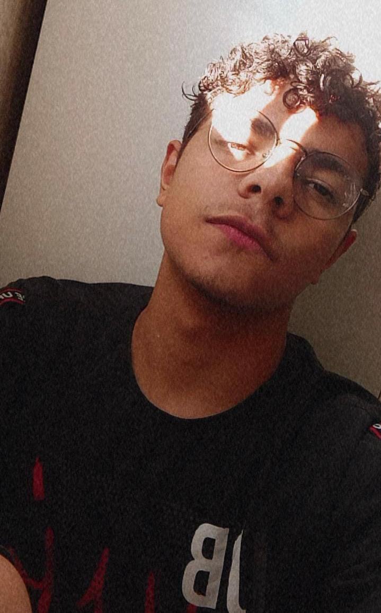
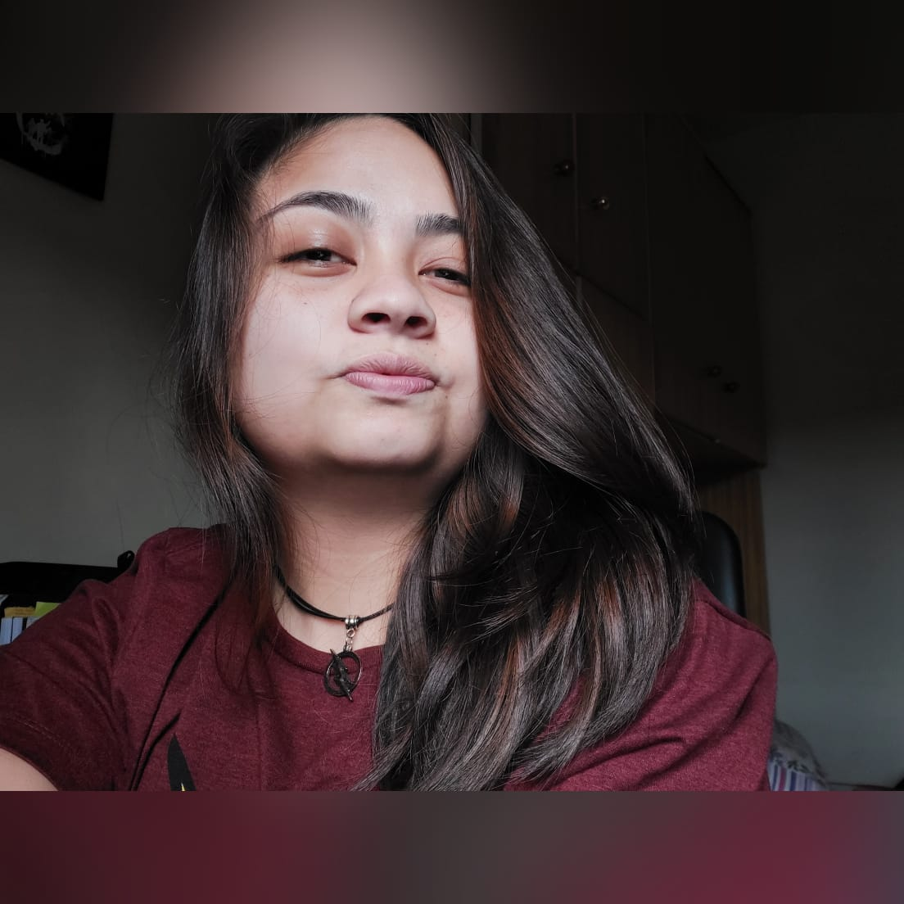
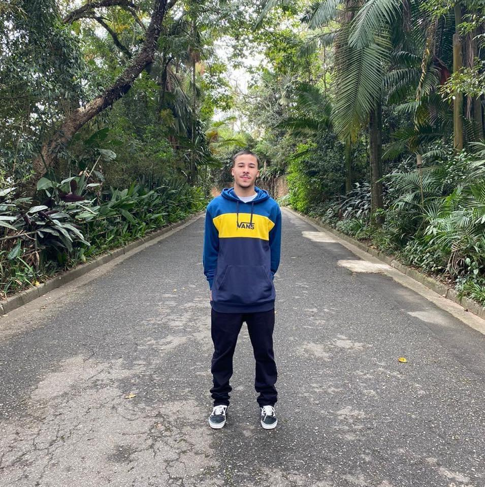

quem somos
Nós desenvolvedores da Sociedade Hacker, jovens estudantes da computação e suas tecnologias. Ao decorrer dos estudos e pesquisas que fazemos, percebemos que a segurança assim como em nossas vidas, nos sistemas e de grande importância. E mesmo com avanço da tecnologia, ainda temos risco ao uso inadequado dos sistemas. Por isso fizemos este site para podermos passar informação desse lado da cibersegurança. Assim como as organizações, os usuários devem se prevenir contra o perigo de uma invasão, malwares, seja qual for o ataque.
Abaixo tem uma breve apresentação de cada um dos desenvolvedores.

Nome: Tiago Santos Assis
Idade: 24 anos
Curso: Ciência da computação
Faculdade: Universidade Paulista
Sobre: O que posso dizer sobre a área, sou apaixonado por tecnologia. Estou correndo atrás para me transformar em um grande profissional e poder criar tecnologias que nos ajude em nosso dia a dia e para nosso entretenimento. De primeiro plano penso entrar em uma empresa conceituada de software para me desenvolver e poder no futuro criar meu próprio negócio, próprio projetos.

Nome: Natan de Souza Oliveira
Idade: 17 anos
Curso: Ciência da computação
Faculdade: Universidade Paulista
Sobre: Meu objetivo como futuro cientista da computação, é ser um diretor de tecnologia em grandes empresas como Microsoft, Tesla, Apple, etc. Além do cargo, almejo participar e projetar inúmeros projetos de tecnologia, com o intuito de inovar e mudar o mundo.
Nome: Larissa Leal
Idade: 18 anos
Curso: Ciência da computação
Faculdade: Universidade Paulista
Sobre: meu objetivo é trabalhar como Project manager estando a frente de projetos que contribuem na funcionalidade de empresas, criando softwares de acordo com a necessidade de cada uma.

Nome: Fernanda Mayumi Sato
Idade: 18 anos
Curso: Ciência da computação
Faculdade: Universidade Paulista
Sobre: Tenho o intuito de começar a trabalhar com administração de redes, oferecendo suporte e manutenção para melhorias da mesma.

Nome: Paulo Henrique dos Santos
Idade: 20 anos
Curso: Ciência da computação
Faculdade: Universidade Paulista
Sobre: meu objetivo é trabalhar com relação a sistematização de uma empresa podendo dar auxílio do suporte até o alto padrão, como consultoria e suporte, banco de dados e desenvolvimento de softwares. (Com intenções futuras de poder participar ou até criar algum grupo para ingressar e desenvolver um sistema).
“Se você colocar uma chave debaixo do tapete permitirá que um ladrão encontre-a. Os cibercriminosos estão usando todas as ferramentas da tecnologia à sua disposição para hackear contas das pessoas. Se eles sabem que há uma chave escondida em algum lugar, eles farão de tudo para encontrá-la.”
Tim Cook, CEO da Apple.
Clique aqui para entrar em contato conosco